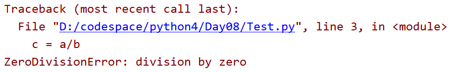
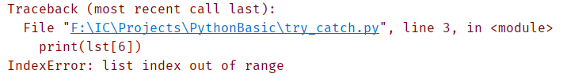
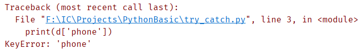
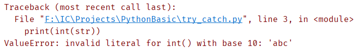
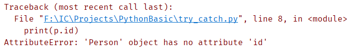

<!DOCTYPE lake>
<p data-lake-id="u12cd53d6" id="u12cd53d6"><span data-lake-id="uc4e65a9b" id="uc4e65a9b">什么是异常?</span></p><ul list="u5ba76c34"><li data-lake-id="u6488936b" fid="udeee8728" id="u6488936b"><span data-lake-id="u478b8c5c" id="u478b8c5c">程序在运行过程中，发生了未知的事件，影响到了程序的正常运行</span></li><li data-lake-id="u4f1b440c" fid="udeee8728" id="u4f1b440c"><span data-lake-id="u7295a562" id="u7295a562">异常是一种事件</span></li><li data-lake-id="ud8237042" fid="udeee8728" id="ud8237042"><span data-lake-id="u672a0946" id="u672a0946">异常会影响到程序正常运行</span></li></ul><h2 data-lake-id="JE3ke" data-lake-index-type="2" id="JE3ke"><span data-lake-id="u2d060020" id="u2d060020">第一个异常</span></h2><span class="yuque-card-unsupported">[codeblock]</span><p data-lake-id="ufeb59227" id="ufeb59227"><span data-lake-id="udf447a1c" id="udf447a1c">运行程序:</span></p><p data-lake-id="ube3533e6" id="ube3533e6"></p><p data-lake-id="u1199f46e" id="u1199f46e"><span data-lake-id="u67ce44bd" id="u67ce44bd">出现了</span><code data-lake-id="u2b1486ad" id="u2b1486ad"><span data-lake-id="u71ef990a" id="u71ef990a">ZeroDivisionError</span></code><span data-lake-id="u85d952ab" id="u85d952ab">异常</span></p><p data-lake-id="u3529e53e" id="u3529e53e"><span data-lake-id="u7e68aed7" id="u7e68aed7">出现异常会造成程序停止</span></p><h2 data-lake-id="qxSJz" data-lake-index-type="2" id="qxSJz"><span data-lake-id="u88d47ee2" id="u88d47ee2">异常捕获</span></h2><p data-lake-id="u990a6439" id="u990a6439"><span data-lake-id="u5ab70c5b" id="u5ab70c5b">使用</span><code data-lake-id="u695dbbcf" id="u695dbbcf"><span data-lake-id="u35e02c17" id="u35e02c17">try except</span></code><span data-lake-id="u2890a755" id="u2890a755">捕获异常</span></p><span class="yuque-card-unsupported">[codeblock]</span><p data-lake-id="ucd61f475" id="ucd61f475"><span data-lake-id="u4cb44fd9" id="u4cb44fd9">代码:</span></p><span class="yuque-card-unsupported">[codeblock]</span><p data-lake-id="uc0692eff" id="uc0692eff"><span data-lake-id="u3bbcab84" id="u3bbcab84">可以捕获异常的类型</span></p><span class="yuque-card-unsupported">[codeblock]</span><h2 data-lake-id="ekVuq" data-lake-index-type="2" id="ekVuq"><span data-lake-id="uc726aa29" id="uc726aa29">finally</span></h2><p data-lake-id="u96fac724" id="u96fac724"><code data-lake-id="uc02f8984" id="uc02f8984"><span data-lake-id="u791ffe29" id="u791ffe29">try</span></code><span data-lake-id="u64e4eee7" id="u64e4eee7">语句中使用</span><code data-lake-id="u644bd286" id="u644bd286"><span data-lake-id="ubf01d4cf" id="ubf01d4cf">finally</span></code><span data-lake-id="u99d70329" id="u99d70329">，</span><code data-lake-id="u4f10d1fa" id="u4f10d1fa"><span data-lake-id="ud942518a" id="ud942518a">finally</span></code><span data-lake-id="ub21af306" id="ub21af306">中代码不论有没有出现异常都会执行</span></p><p data-lake-id="ue94c9f93" id="ue94c9f93"><span data-lake-id="ucf81052a" id="ucf81052a">格式：</span></p><span class="yuque-card-unsupported">[codeblock]</span><p data-lake-id="u60aca8bf" id="u60aca8bf"><span data-lake-id="u6c4b4f3f" id="u6c4b4f3f">例如：</span></p><span class="yuque-card-unsupported">[codeblock]</span><p data-lake-id="uc5965f99" id="uc5965f99"><span data-lake-id="u863b60c1" id="u863b60c1">程序出现异常也会执行</span><code data-lake-id="ub397d7db" id="ub397d7db"><span data-lake-id="ua02cdd91" id="ua02cdd91">finally</span></code><span data-lake-id="uf5c60636" id="uf5c60636">中的代码</span></p><h2 data-lake-id="OhGOZ" data-lake-index-type="2" id="OhGOZ"><span data-lake-id="u5eb97644" id="u5eb97644">try except finally语法</span></h2><p data-lake-id="u006af3bd" id="u006af3bd"><span data-lake-id="ubbf24b62" id="ubbf24b62">格式:</span></p><span class="yuque-card-unsupported">[codeblock]</span><p data-lake-id="uda96aec2" id="uda96aec2"><span data-lake-id="ua3b403e3" id="ua3b403e3">例如读写文件：</span></p><span class="yuque-card-unsupported">[codeblock]</span><p data-lake-id="ucb84fd89" id="ucb84fd89"><span data-lake-id="uf77e2c03" id="uf77e2c03">无论文件是否操作失败，最终都需要关闭文件</span></p><p data-lake-id="u927aca43" id="u927aca43"><span data-lake-id="u5ca02911" id="u5ca02911">所以把文件关闭的方法放到</span><code data-lake-id="ue52963cb" id="ue52963cb"><span data-lake-id="u3f0cccd5" id="u3f0cccd5">finally</span></code><span data-lake-id="u557bd8fb" id="u557bd8fb">中</span></p><h2 data-lake-id="ADNO6" data-lake-index-type="2" id="ADNO6"><span data-lake-id="u0d0e7406" id="u0d0e7406">try except else finally语法</span></h2><p data-lake-id="u277b9026" id="u277b9026"><span data-lake-id="u2281688b" id="u2281688b">格式:</span></p><span class="yuque-card-unsupported">[codeblock]</span><p data-lake-id="u7f81c5bf" id="u7f81c5bf"><span data-lake-id="ud6d24c62" id="ud6d24c62">例如：</span></p><span class="yuque-card-unsupported">[codeblock]</span><h2 data-lake-id="SH8PM" data-lake-index-type="2" id="SH8PM"><span data-lake-id="u6e814ebc" id="u6e814ebc">多重捕获</span></h2><span class="yuque-card-unsupported">[codeblock]</span><p data-lake-id="ufd4326b7" id="ufd4326b7"><span data-lake-id="u9cb667a2" id="u9cb667a2">可以通过多个</span><code data-lake-id="u5170a771" id="u5170a771"><span data-lake-id="u79345051" id="u79345051">except</span></code><span data-lake-id="u3091bb95" id="u3091bb95">捕获不同的异常分别处理</span></p><h2 data-lake-id="Yc1At" data-lake-index-type="2" id="Yc1At"><span data-lake-id="u9b5dcd1e" id="u9b5dcd1e">常见的异常类型</span></h2><h3 data-lake-id="W5x9d" data-lake-index-type="2" id="W5x9d"><span data-lake-id="u5835c7bd" id="u5835c7bd">IndexError</span></h3><p data-lake-id="udd49ed03" id="udd49ed03"><span data-lake-id="udf708868" id="udf708868">数组下表越界异常</span></p><span class="yuque-card-unsupported">[codeblock]</span><p data-lake-id="u15e62164" id="u15e62164"></p><h3 data-lake-id="NAybh" data-lake-index-type="2" id="NAybh"><span data-lake-id="uc42c0665" id="uc42c0665">KeyError</span></h3><p data-lake-id="ub18a6caf" id="ub18a6caf"><span data-lake-id="u13f31d78" id="u13f31d78">字典中键不存在</span></p><span class="yuque-card-unsupported">[codeblock]</span><p data-lake-id="u6a6d325e" id="u6a6d325e"></p><h3 data-lake-id="tw3R7" data-lake-index-type="2" id="tw3R7"><span data-lake-id="ua5e7b362" id="ua5e7b362">ValueError</span></h3><p data-lake-id="ufc9446a2" id="ufc9446a2"><span data-lake-id="uc27f3b63" id="uc27f3b63">值类型错误</span></p><span class="yuque-card-unsupported">[codeblock]</span><p data-lake-id="ue9d807a9" id="ue9d807a9"></p><h3 data-lake-id="XCs3T" data-lake-index-type="2" id="XCs3T"><span data-lake-id="u47b2b896" id="u47b2b896">AttributeError</span></h3><p data-lake-id="uc2af9a8c" id="uc2af9a8c"><span data-lake-id="ub812abe2" id="ub812abe2">对象中属性、函数不存在</span></p><span class="yuque-card-unsupported">[codeblock]</span><p data-lake-id="u77544c71" id="u77544c71"></p><p data-lake-id="u47d12dff" id="u47d12dff"><br/></p><h3 data-lake-id="nekkD" id="nekkD"><br/></h3>